Zemeroth v0.4: Abilities, Lasting Effects and New Unit Types
2018.03.03
Hi, comrades! I'm happy to announce Zemeroth v0.4.
Zemeroth is a turn-based hexagonal tactical game written in Rust.
You can download precompiled binaries for Windows, Linux, macOS and android here: https://github.com/ozkriff/zemeroth/releases/tag/v0.4.0
This release adds ~2k lines of code - a lot of new features! And it's hard to describe all the stuff only with words and static images so this time I'll try to use more GIFs (btw, Peek is a cool app for fast gif recording). I hope that they won't cause too much problems for the readers.
NOTE: Most of the GIFs were recorded on a map of 7 tiles wide, but the actual map is 11. See youtube video in the middle of the article for some real gameplay.
Simple walking animation
The first and simplest change is simple walking animations. Compare:
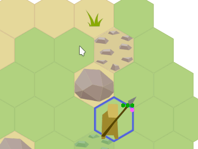

That's just a small visual improvement but it makes the game more lively.
Gameplay Updates
Wounds reduce attacks by one
New rule: every successful attack now reduces target's attack by 1. It's small but important change because it increases the value of initiative and is relied upon by many abilities.
Strong Attacks
In the previous version all attacks were dealing 1 damage. Now, Swordsman and Hammerman (see below) deal 2 damage points per hit.
Abilities
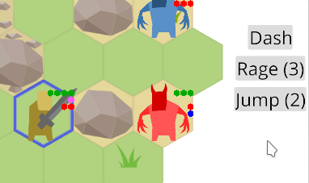
Abilities is the main feature of this release. They come in two flavours: active and passive:
-
Each active ability activation requires either Attack (red) or Joker (purple) point and can trigger enemy's reaction attack.
Most abilities have cooldowns of 2 or 3 turns long.
-
Passive abilities don't require any action points and are activated automatically: during attacks or at the begining of the turn, for example.
Particular abilities are explained in unit sections below.
New Unit: Toxic Imp

Let's start with something simple. This enemy is similar to basic Imp, but does no direct damage and has Poison Attack passive ability.
Poisoned unit receives one would at the begining of each turn. Note that poison also takes away one attack from the victim, weaking it even more. Poison reduces attacks of poisoned unit by one.
Toxic Imp also has no reaction attacks as he's dangerous enough without them.
New Unit: Imp-Bomber
Poison is cool, but it doesn't really changes the game much. One obvious problem of v0.3 was turtling - no movement, boring. Reaction attacks encourage defensive playstyle.
So a new unit was added: Imp-Bomber.
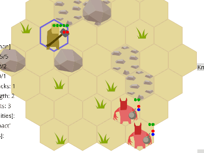
^ He has an active ability Bomb and a very simple AI that tries to use it, if it's available, and then acts as a normal Imp. Bombs with delayed detonation is a classic way to help with this.
Bomb explodes on the next turn and damages everyone around, knocking them back for one tile.
NOTE: As Imps are stupid they can be easily damaged by their bombs. Use it.
This enemy doesn't allow you to stay in a good position without movement. But you still can sometimes move back and forth, so...
New Unit: Imp-Summoner
...Soo, meet Imp-Summoner! This unit summons so many imps so the only way to stay alive is to rush and attack him while summoned imps are still weak. Summoners are your main targets.
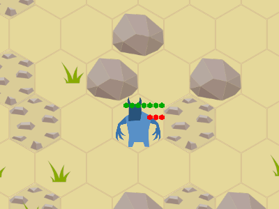
^ Summon ability creates three imps of a random type.
NOTE: Actually, the plan is to make each summon activation even more powerful: call 3-4-5-6 imps, to increase the pressure over time.
Summoner is slow - сan either move one tile or attack/cast during his turn - but he has a lot of strength (health) points and has Heavy Impact and Regeneration passive abilities:

^ Regeneration restores one strength point in the begining of every turn. Heavy Impact throws opponents one tile away on every hit (FlyOff effect).
New Unit: Alchemist
Let's move to player's new units: meet the first one - Alchemist. He's a support unit and has no direct attacks, but has a bunch of useful abilities.
Basic Bomb ability works the same way as it does for Imp-Bomber. Fire bomb and poison bomb are a little bit more interesting:
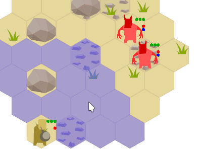
^ Fire object just deals one damage point each turn to anyone standing in the same tile or to anyone walking through it.
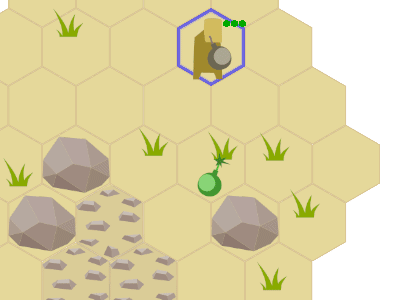
^ Poison cloud object acts similar to fire, but it casts Poisoned effects on agents. This effects deals one point of damage each turn and lasts for two turns.
Both fire and poison cloud objects disappear after two rounds. Note that damage from fire and poison also removes attacks from target - this can protect your alchemist in tough situations.
Alchemist has one more useful ability: Heal can restore two strength points and remove any lasting effects:
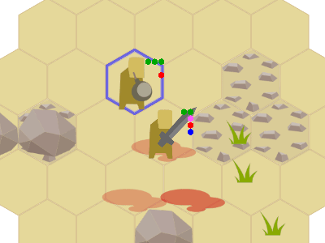
New Unit: Hammerman
Slow but powerful unit. His attack deals 2 damage points and he has HeavyImpact passive ability (same as Summoner, see above).

^ Club ability causes Stun lasting effect and FlyOff.
Stun lasting effect removes all attacks/moves/jokers from the target for one round.
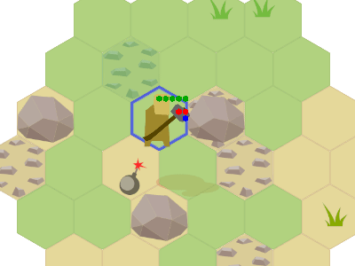
^ These abilities can be used to move bombs and boulders too. You can push enemy into fire, poison or bomb. Or you can push some other your figher out of danger if needed.
Updated Swordsman
Swordsman also got a few updates. His main attack now also deals two points of damage.

^ Rage ability gives a lot of attacks but has a long cooldown, so you need to choose carefully when to use it.

^ Jump ability - think about Diablo's Barbarian (future versions of the ability may get stunning effect ;) ).

^ Dash ability allows you to move one tile without triggering reaction attacks. Allows you to start the attack or to escape from the enemies.
It may be hard to escape from a bad position witout Dash or Jump ability:
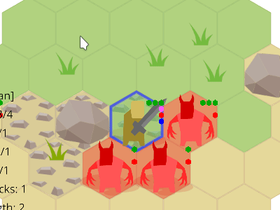
Dash can be combined with Rage and Jump abilities to perform a series of attacks and return back to safety:
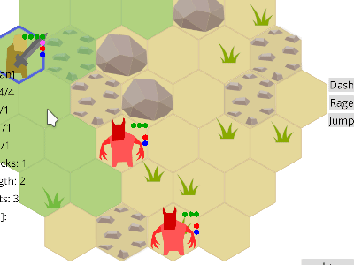
Updated Spearman
Also got a Jump ability, but of a different flavour: three tiles distance and three turns cooldown. So it's mostly useful for escaping:
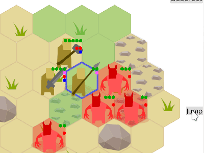
Gameplay Video
So, putting this all together:

It starts reminding something like a real game, isn't it? :) Though a lot of work is still need to be done.
Implementation note: RON v0.2
RON v0.2
added unwrap_newtypes extension that seriously simplified my config files
by getting rid of a lot of braces:
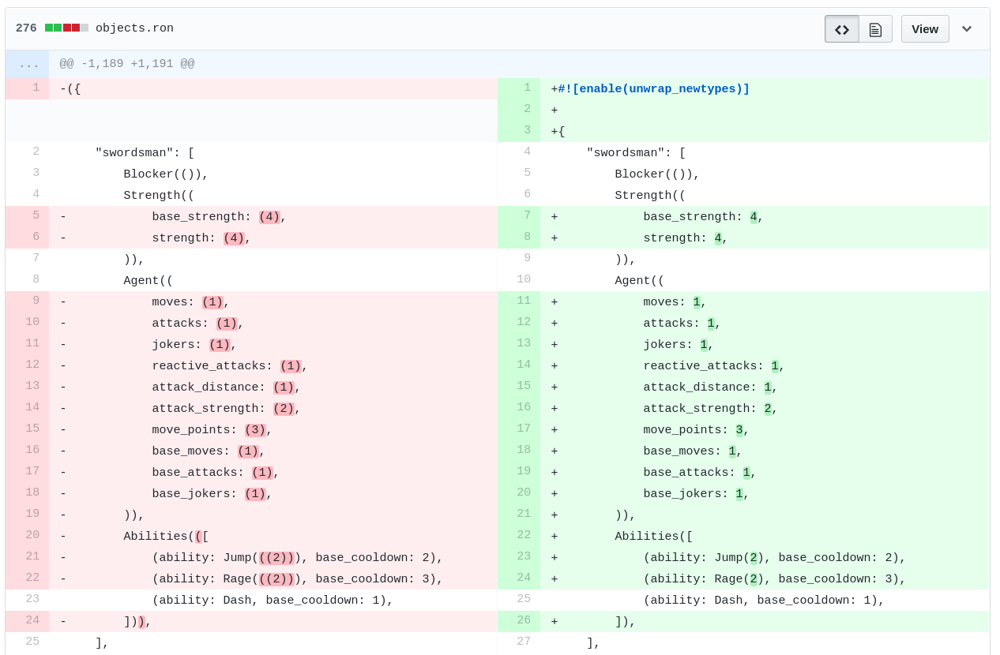
Thanks, @Torkleyy!
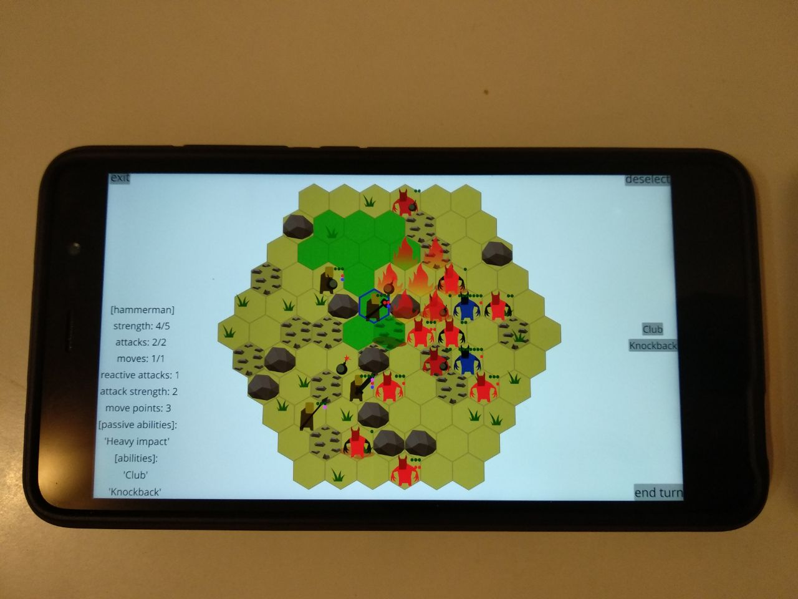
That's all for today, I have to go play Into the Breach! :)
News: @ozkriff on twitter, imgur devlog
blog comments powered by Disqus